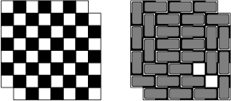

2. Mathematical Background¶
2.1. Induction and recursion on the natural numbers¶
In its most basic form, the principle of induction on the natural numbers says that if you want to prove that every natural number has some property, it suffices to show that zero has the property, and that whenever some number \(n\) has the property, so does \(n + 1\). Here is an example.
Theorem
For every natural number \(n\), \(\sum_{i \le n} i = n (n + 1) / 2\).
Proof
Use induction on \(n\). In the base case, we have \(\sum_{i \le 0} i = 0 = 0 (0 + 1) / 2\). For the induction step, assuming \(\sum_{i \le n} i = n (n + 1) / 2\), we have
The story is often told that Gauss, as a schoolchild, discovered this formula by writing
and then adding the two rows and dividing by two. The proof by induction doesn’t provide insight as to how one might discover the theorem, but once you have guessed it, it provides a short and effective means for establishing that it is true.
In a similar vein, you might notice that an initial segment of the odd numbers yields a perfect square. For example, we have \(1 + 3 + 5 + 7 + 9 = 25\). Here is a proof of the general fact:
Theorem
For every natural number \(n\), \(\sum_{i \le n} (2 i + 1) = (n + 1)^2\).
Proof
The base case is easy, and assuming the inductive hypothesis, we have
A close companion to induction is the principle of recursion. Recursion enables us to define functions on the natural numbers, and induction allows us to prove things about them. For example, let \(g : \mathbb{N} \to \mathbb{N}\) be the function defined by
Then \(g\) is what is known as the factorial function, whereby \(g(n)\) is conventionally written \(n!\). The point is that if you don’t know what the factorial function is, the two equations above provide a complete specification. There is exactly one function, defined on the natural numbers, that meets that description.
Here is an identity involving the factorial function:
Theorem
\(\sum_{i \le n} i \cdot i! = (n + 1)! - 1\).
Proof
The base case is easy. Assuming the claim holds for \(n\), we have
This is a pattern found throughout mathematics and computer science: define functions and operations using recursion, and then use induction to prove things about them.
The Towers of Hanoi puzzle provides a textbook example of a problem that can be solved recursively. The puzzle consists of three pegs and disks of different diameters that slide onto the pegs. The initial configuration has \(n\) disks stacked on one of the pegs in decreasing order, with the largest one at the bottom and the smallest one at the top. Suppose the pegs are numbered 1, 2, and 3, with the disks starting on peg 1. The required task is to move all the disks from peg 1 to peg 2, one at a time, with the constraint that a larger disk is never placed on top of a smaller one.
To move n disks from peg A to peg B with auxiliary peg C:
if n = 0
return
else
move n - 1 disks from peg A to peg C using auxiliary peg B
move 1 disk from peg A to peg B
move n - 1 disks from peg C to peg B using auxiliary peg A
We will show in class that this requires \(2^n - 1\) moves. The exercises below ask you to show that any solution requires at least this many moves.
2.2. Complete induction¶
As we have described it, the principle of induction is pretty rigid: in the inductive step, to show that \(n+1\) has some property, we can only use the corresponding property of \(n\). The principle of complete induction is much more flexible.
Principle of complete induction
To show that every natural number \(n\) has some property, show that \(n\) has that property whenever all smaller numbers do.
As an exercise, we ask you to prove the principle of complete induction using the ordinary principle of induction. Remember that a natural number greater than or equal to 2 is composite if it can be written as a product of two smaller numbers, and prime otherwise.
Theorem
Every number greater than two can be factored into primes.
Proof
Let \(n\) be any natural number greater than or equal to 2. If \(n\) is prime, we are done. Otherwise, write \(n = m \cdot k\), where \(m\) and \(k\) are smaller than \(n\) (and hence greater than 1). By the inductive hypothesis, \(m\) and \(k\) can each be factored into prime numbers, and combining these yields a factorization of \(n\).
Here is another example we will discuss in class:
Theorem
For any \(n \ge 3\), the sum of the angles in any \(n\)-gon is \(180 (n - 2)\).
The companion to complete induction on the natural numbers is a form of recursion known as course-of-values recursion, which allows you to define a function \(f\) by giving the value of \(f(n)\) in terms of the value of \(f\) at arbitrary smaller values of \(n\). For example, we can define the sequence of Fibonacci numbers as follows:
The fibonacci numbers satisfy lots of interesting identities, some of which are given in the exercises.
In fact, you can define a function by recursion as long as some associated measure decreases with each recursive call. Define a function \(f(n, k)\) for \(k \le n\) by
Here it is the first argument that decreases. In class, we’ll discuss a proof that this defines the function
which is simultaneously equal to number of ways of choosing \(k\) objects out of \(n\) without repetition.
Finally, here is a recursive description of the greatest common divisor of two nonnegative integers:
where \(\fn{mod}(x, y)\) is the remainder when dividing \(x\) by \(y\).
2.3. Generalized induction and recursion¶
The natural numbers are characterized inductively by the following clauses:
\(0\) is a natural number.
If \(x\) is a natural number, so is \(\fn{succ}(x)\).
Here the function \(\fn{succ}(x)\) is known as the successor function, namely, the function that, given any number, returns the next one in the sequence. The natural numbers structure is also sometimes said to be freely generated by this data. The fact that it is generated by \(0\) and \(\fn{succ}(x)\) means that it is the smallest set that contains \(0\) and is closed under \(\fn{succ}(x)\); in other words, any set of natural numbers that contains \(0\) and is closed under \(\fn{succ}(x)\) contains all of them. This is just the principle of induction in disguise. The fact that it is generated freely by these elements means that there is no confusion between them: \(0\) is not a successor, and if \(\fn{succ}(x)=\fn{succ}(y)\), then \(x = y\). Intuitively, being generated by \(0\) and \(\fn{succ}(x)\) means that any number can be represented by an expression built up from these, and being generated freely means that the representation is unique.
The natural numbers are an example of an inductively defined structure. These come up often in logic and computer science. It is often useful to define functions by recursion on such structures, and to use induction to prove things about them. We will describe the general schema here with some examples that often come up in computer science.
Let \(\alpha\) be any data type. The set of all lists of elements of \(\alpha\), which we will write as \(\fn{List}(\alpha)\), is defined inductively as follows:
The element \(\fn{nil}\) is an element of \(\fn{List}(\alpha)\).
If \(a\) is an element of \(\alpha\) and \(\ell\) is an element of \(\fn{List}(\alpha)\), then the element \(\fn{cons}(a, \ell)\) is an element of \(\fn{List}(\alpha)\).
Here \(\fn{nil}\) is intended to describe the empty list, \([]\), and \(\fn{cons}(a, \ell)\) is intended to describe the result of adding \(a\) to the beginning of \(\ell\). So, for example, the list of natural numbers \([1, 2, 3]\) would be written \(\fn{cons}(1, \fn{cons}(2, \fn{cons}(3, \fn{nil})))\). Think of \(\fn{List}(\alpha)\) as having a constructor \(\fn{cons}(a, \cdot)\) for each \(a\). Then, in the terminology above, \(\fn{List}(\alpha)\) is generated inductively by \(\fn{nil}\) and those constructors.
Henceforth, for clarity, we’ll use the notation \([]\) for \(\fn{nil}\) and \(a \mathbin{::} \ell\) for \(\fn{cons}(a, \ell)\). More generally, we can take \([a, b, c, \ldots]\) to be an abbreviation for \(a \mathbin{::} (b \mathbin{::} (c \mathbin{::} \ldots []))\).
Saying that \(\fn{List}(\alpha)\) is inductively defined means that we principles of recursion and induction on it. For example, the following concatenates two lists:
Here the recursion is on the first argument. As with the natural numbers, the recursive definition specifies what to do for each of the constructors. We’ll use the notation \(\ell \append m\) for \(\fn{append}(\ell, m)\), and with this notation, the two defining clauses read as follows:
From the definition, we have \([] \append \ell = \ell\) for every \(\ell\), but \(m \append [] = m\) is something we have to prove.
Proposition
For every \(m\), we have \(m \append [] = m\).
Proof
We use induction on \(m\). In the base case, we have \([] \append [] = []\) from the definition of \(\fn{append}\). For the induction step, suppose we have \(m \append [] = m\). Then we also have
The definition of the append function is an example of structural recursion, called that because the definition proceeds by recursion on the structure of the inductively defined type. In particular, there is a clause of the definition corresponding to each constructor. The proof we have just seen is an instance of structural induction, called that because, once again, there is part of the proof for each constructor. The base case, for \(\fn{nil}\), is straightforward, because that constructor has no arguments. The inductive step, for \(\fn{cons}\), comes with an inductive hypothesis because the \(\fn{cons}\) constructor has a recursive argument. In class, we’ll do a similar proof that the \(\fn{append}\) operation is associative.
The following function (sometimes called \(\fn{snoc}\)) appends a single element at the end:
An easy induction on \(\ell\) shows that, as you would expect, \(\fn{append1}(\ell, a)\) is equal to \(\ell \append [a]\).
The following function reverses a list:
In class, or for homework, we’ll work through proofs that that the following holds for every pair of lists \(\ell\) and \(m\):
Here is another example of a property that can be proved by induction:
From a mathematical point of view, this definition of the reverse function above is as good as any other, since it specifies the function we want unambiguously. But in Chapter 3 we will see that such a definition can also be interpreted as executable code in a functional programming language such as Lean. In this case, the execution is quadratic in the length of the list (think about why). The following definition is more efficient in that sense:
The idea is that \(\fn{reverseAux}\) adds all the elements of the first argument to the second one in reverse order. So the second arguments acts as an accumulator. In fact, because it is a tail recursive description, the code generated by Lean is quite efficient. In class, we’ll discuss an inductive proof that \(\fn{reverse}(\ell) = \fn{reverse'}(\ell)\) for every \(\ell\).
It is worth mentioning that structural induction is not the only way to prove things about lists, and structural recursion is not the only way to define functions by recursion. Generally speaking, we can assign any complexity measure to a data type, and do induction on complexity, as long as the measure is well founded. (This will be the case, for example, for measures that take values in the natural numbers, with the usual ordering on size.) For example, we can define the length of a list as follows:
Then we can define a function \(f\) on lists by giving the value of \(f(\ell)\) in terms of the value of \(f\) on smaller lists, and we can prove a property of lists using the fact that the property holds of all smaller lists as an inductive hypothesis. These are ordinary instances of recursion and induction on the natural numbers.
As another example, we consider the type of finite binary trees, defined inductively as follows:
The element \(\fn{empty}\) is a binary tree.
If \(s\) and \(t\) are finite binary trees, so is the \(\fn{node}(s, t)\).
In this definition, \(\fn{empty}\) is intended to denote the empty tree, and \(\fn{node}(s, t)\) is intended to denote the binary tree that consists of a node at the top and has \(s\) and \(t\) as the left and right subtrees, respectively.
Be careful: it is more common to take the set of binary trees to consist of only the nonempty trees, in which case, what we have defined here are called the extended binary trees. Adding the empty tree results in a nice inductive characterization. If we started with a one-node tree as the base case, we would have to allow for three types of compound tree: one type with a node and a subtree to the left, one with a node and a subtree to the right, and one with a node with both left and right subtrees.
We can count the number of nodes in an extended binary tree with the following recursive definition:
We can compute the depth of an extended binary tree as follows:
Again, be careful: many authors take the depth of a tree to be the length of the longest path from the root to a leaf, in which case, what we have defined here computes the depth plus one for nonempty trees.
2.4. Invariants¶
The mutilated chessboard problems involves an \(8 \times 8\) chessboard with the top right and bottom left corners removed. Imagine you are given a set of dominoes, each of which can cover exactly two squares. It is possible to cover all the squares of the mutilated chessboard using dominoes, so that each square is covered by exactly one domino?
A moment’s reflection shows that the answer is no. If you imagine the chessboard squares colored white and black in the usual way, you’ll notice that the two squares we removed have the same color, say, black. That means that there are more white squares than black squares. On the other hand, every domino covers exactly one square of each color. So no matter how many dominoes we put down, we’ll never have them color more white squares than black squares.
{kind=link}
The fact that any way of putting down dominoes covers the same number of white and black squares is an instance of an invariant, which is a powerful idea in both mathematics and computer science. An invariant is something—a quantity, or a property—that doesn’t change as something else does (in this case, the number of dominoes).
Often the natural way to establish an invariant uses induction. In this case, it is obvious that putting down one domino doesn’t change the difference between the number of white and black squares covered, since each domino covers one of each. By induction on \(n\), putting down \(n\) dominoes doesn’t change the difference either.
The following puzzle, called the MU puzzle, comes from the book Gödel, Escher, Bach by Douglas Hofstadter. It concerns strings consisting of the letters M, I, and U. Starting with the string MI, we are allowed to apply any of the following rules:
Replace sI by sIU, that is, add a U to the end of any string that ends with I.
Replace Ms by Mss, that is, double the string after the initial M.
Replace sIIIt by sUt, that is, replace any three consecutive Is with a U.
Replace sUUt by st, that is, delete any consecutive pair of Us.
The puzzle asks whether it is possible to derive the string MU. The answer is no: it turns out that a string is derivable if and only if it consists of an M followed by any number of Is and Us, as long as the number of Is is not divisible by 3. In class, we’ll prove the “only if” part of this equivalence. Try the “if” part if you like a challenge.
As a final example, in class we’ll discuss the Golomb tromino theorem. A tromino is an L-shaped configuration of three squares. Golomb’s theorem says that any \(2^n \times 2^n\) chessboard with one square removed can be tiled with trominoes. We’ll prove this together in class.
2.5. Exercises¶
Prove the formula for the sum of a geometric series:
\[\sum_{i < n} a r^i = \frac{a(r^n - 1)}{r - 1}\]Prove that for every \(n > 4\), \(n! > 2^n\).
Show that the solution to the towers of Hanoi given in Section 2.1 is optimal: for every \(n\), it takes at least 2^n - 1 moves to move all the disks from one peg to another.
Consider the variation on the towers of Hanoi problem in which you can only move a disk to an adjacent peg. In other words, you can move a disk from peg 1 to peg 2, from peg 2 to peg 1, from peg 2 to peg 3, or from peg 3 to peg 2, but not from peg 1 to peg 3 or from peg 3 to peg 1.
Describe a recursive procedure for solving this problem, and show that is requires \(3^n - 1\) moves. If you are ambitious, show that this is optimal, and that it goes through all the \(3^n\) valid positions.
Consider the variation on the towers of Hanoi in which pegs can be moved cyclicly: from peg 1 to peg 2, from peg 2 to peg 3, or from peg 3 to peg 1. Describe a recursive procedure to solve this problem.
Use the ordinary principle of induction to prove the principle of complete induction.
Let \(F_0, F_1, F_2, \ldots\) be the sequence of Fibonacci numbers.
Let \(\alpha\) and \(\beta\) be the two roots of the equation \(x^2 = x + 1\). Show that for every \(n\), \(F_n = (\alpha^n - \beta^n)/\sqrt{5}\).
Show \(\sum_{i < n} F_i = F_{n+1} - 1\).
Show \(\sum_{i \le n} F_i^2 = F_n F_{n+1}\).
Show that with n straight lines we can divide the plane into at most \(n^2 + n + 2\) regions, and that this is sharp.
Show that the recursive description of \(\fn{gcd}(x,y)\) presented in Section 2.3 correctly computes the greatest common divisor of \(x\) and \(y\), where we define \(\fn{gcd}(0,0)\) equal to 0. You can restrict attention to nonnegative values of \(x\) and \(y\). (Hint: you can use the fact that for for every \(y\) not equal to 0, we can write \(x = \fn{div}(x, y) \cdot y + \fn{mod}(x, y)\), where \(\fn{div}(x, y)\) is the integer part of \(x\) divided by \(y\). First show that for every \(k\), \(\fn{gcd}(x, y) = \fn{gcd}(x + ky, y)\), and use that fact.
Use structural induction to prove
\[\fn{reverse}(\ell \append m) = \fn{reverse}(m) \append \fn{reverse}(\ell).\]Use structural induction to prove
\[\fn{reverse}(\fn{reverse}(\ell)) = \ell.\]Prove that for every \(\ell\) we have
\[\fn{reverse}'(\ell) = \fn{reverse}(\ell).\]Prove that for every \(\ell\) and \(m\) we have
\[\fn{length}(\ell \append m) = \fn{length}(\ell) + \fn{length}(m).\]How many binary trees of depth \(n\) are there? Prove your answer is correct.
Show that a string is derivable in the MU puzzle if and only if it consists of an M followed by any number of Is and Us, as long as the number of Is is not divisible by 3.